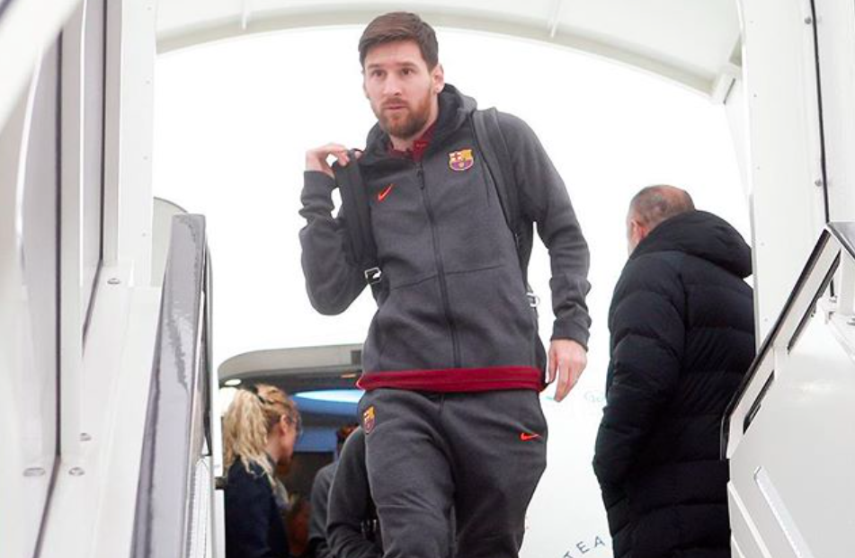
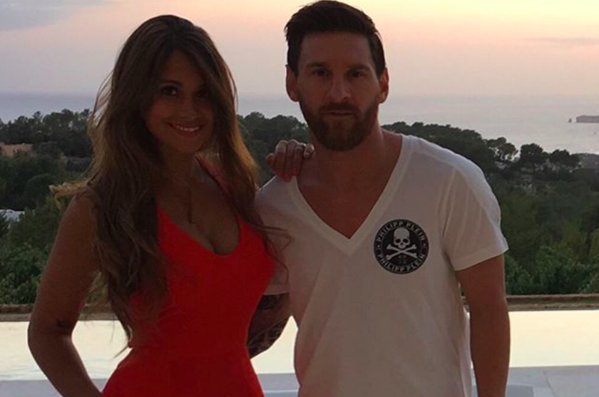
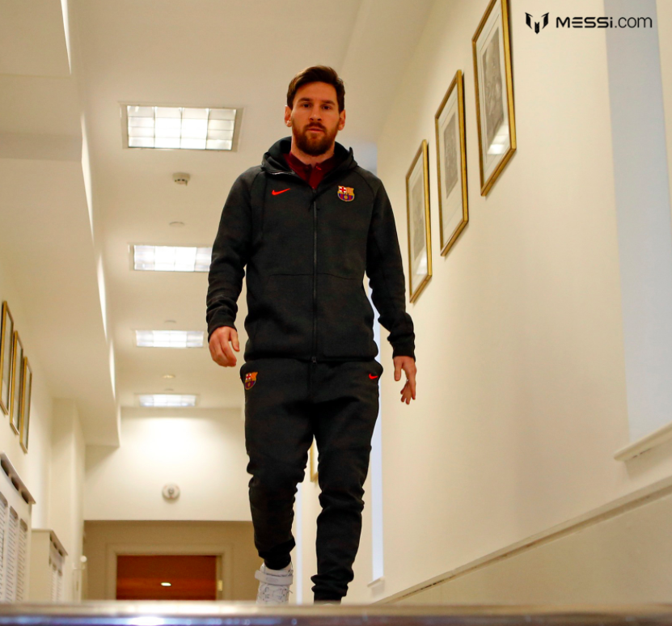

Маленький, да удаленький. Множество футбольных трофеев, главные из которых – это пять «Золотых мячей» подряд, приведшие Лионеля Месси к числу рекордсменов мира. Его соперничество со звездой Криштиану Роналду не завершилось: фанаты постоянно сравнивают их игру, личные успехи и делают новые ставки.
Впереди чемпионат мира и можно только гадать, кто вновь отличится – один из самых высоких футболистов из Португалии или низкорослый аргентинец. Рост Лионеля Месси 169 см Вес Лионеля Месси 67 кг
Это нисколько не мешают ему завоевывать титулы и показывать уникальную технику игры. Наоборот, он не раз признавался, что маленький рост способствует высокому классу игры. Недаром он с детства носит прозвище Блоха, что говорит о его несомненном таланте проводить мяч через все поле, обходя соперников и поражая ворота красивыми голами. А их количество уже давно перестали считать, отмечая лишь самые изящные и неповторимые, на которые способен только Месси.
Да, он входит в топ-10 самых низкорослых известных игроков, но и прославленные Пеле с Марадоной в свое время также могли попасть в этот перечень. Пеле выше Месси всего на 4 см., а Марадона вообще ниже его на пару сантиметров.
Знаменитый футболист, которому прочат звание великого игрока всех времен, Лионель Месси начал зарабатывать в возрасте 13 лет. Его первый контракт с испанской «Барселоной» в 2000 году, вымученный и долгожданный, принес будущей звезде этого клуба 60 тысяч долларов годовых. Это было немногим меньше, чем зарабатывал его отец – рабочий сталелитейного завода. Но если добавить еще 100 тысяч долларов, которые акционеры включили отдельным приложением к контракту на лечение юного футболиста, то получается совсем неплохо.
Единственным минусом для Лео в первый год тренировок в испанском клубе было отсутствие семьи: мать с братьями и сестрой была вынуждена вернуться на родину в Росарио. С Лео остался отец, но тоска по городу, где прошло его счастливое детство в кругу большой аргентинской семьи, не покидала его долгое время. Увлечение футболом перевесило все трудности: смену страны, отсутствие языка, сложности в общении, опасение в том, что его заболевание не позволит ему осуществить мечту – играть в футбол. Все это Месси преодолел благодаря своему настойчивому характеру. Уже через три года он дебютировал в составе молодежной сборной в товарищеском матче с «Порту», а еще через год сыграл в официальном – с «Эспаньолой». В 2004 году парень зарабатывал уже 10 тысяч долларов в неделю – ему было всего 17 лет. К этому времени он уже окончил лечение, благодаря чему его рост значительно увеличился. Акционеры клуба были довольны, что не ошиблись, потратив на него деньги – самый маленький и молодой футболист команды стоил гораздо больше первоначальной суммы.
Ценность игрока продолжает расти. В прошлом году он заключил последний контракт с «Барселоной». С июля прошлого года капитан каталонцев зарабатывает 104 миллиона долларов в год без вычета налогов. Западные СМИ пишут, что он обошел на этом поприще самых высокооплачиваемых игроков мира: Лавесси, который играет за китайцев, и Карлоса Тевеса — нападающего аргентинского клуба «Бока Хуниорс». Оба футболиста выступают за национальную сборную Аргентины. Единственный, кому Месси уступал в заработке – Криштиану Роналду, которому «Реал» платил на пять миллионов больше, чем Лео. Однако ситуация изменилась: СМИ пересмотрели рейтинги и подсчитали доллары в карманах участников чемпионата мира-2018. В новом рейтинге португалец стоит после аргентинца с комментарием о том, что Криштиану за прошлый год потерял в цене. Вечное противостояние двух знаменитых футболистов, за которым с интересом следят их фанаты. Сделка с «Барселоной» заключена до 2021 года. К этому времени Месси проведет семнадцать лет в составе испанского клуба. Такая преданность в нынешнее время многих поражает, ведь игроки с легкостью меняют клубы, соглашаясь на более выгодные условия.
Лидер «Барселоны» и сборной Аргентины живет в собственном доме с футбольным полем, бассейном и садом в пригороде столицы Кастельдефельса. Он купил его за 1,8 млн евро в 2009 году, вложив в ремонт и дизайн еще 6 млн евро.
Район считался престижным еще до того, как там поселился Месси. Несколько лет назад он позволил прогуляться репортерам с камерой по особняку – они и выложили в ютуб домашнюю жизнь знаменитого футболиста. Сопровождал их по дому не только сам Лионель, но и его жена Антонелла Рокуццо с двумя сыновьями. В Каталонию он перевез ее после того, как девушка получила диплом университета в Росарио, где изучала медицинские науки и сферу социального общения.
С красавицей-женой он познакомился благодаря своему другу и брату Антонеллы. В детстве компания гоняла мяч, а Антонелла частенько приходила болеть за брата. Она всегда нравилась застенчивому Лео, но сама не обращала внимания на маленького парня, хоть тот всегда был душой дворовой команды. Подростками они продолжали видеться в общих компаниях, Лео часто приезжал домой на каникулы и даже писал признательные записки девушке, но взаимности не было. Только в 20 лет, будучи уже известным игроком «Барселоны», он смог добиться ее расположения. С тех пор они всегда вместе. Пару считают образцом семейного благополучия. В их каталонском доме растут три сына Месси: Тьяго, Матео и Чиро. Глава семейства все свое свободное время проводит с семьей, он большой друг своего старшего сына Тьяго, который уже забивает голы, играя с детьми папиных коллег по команде. Лео выкладывает видеоролики в свой Инстаграм, где у него более 90 млн подписчиков. Вот дети поют гимн его любимой команды, в другом ролике – годовалый Матео смотрит мультики и повторяет движения танцующих персонажей. Есть фото, где они все вчетвером, вокруг малыша Чиро, который пока центр этой вселенной.
К дому пристроена огромная терраса и зона барбекю: гостей здесь бывает много. Ведь у всех друзей-футболистов есть семьи, и им легко добраться до Месси прямо с тренировки. От стадиона «Камп Ноу» до дома капитана команды всего 20 километров. Вид из панорамных окон на Средиземное море и горы потрясающий. Из каждой комнаты можно выйти на просторный балкон. Интерьер дома прост и удобен: деревянные полы, белые, светло-бежевые и коричневые цвета мебели и стен, немного розового – специально для любимой жены и единственной женщины. В тренажерном зале несколько беговых дорожек, установленных к огромному окну с видом на горы. А в бассейне можно любоваться закатом. Очень много зелени, газон и никаких искусственных покрытий. Лео предпочитает бегать по траве босиком и его мальчишки следуют за отцом.
